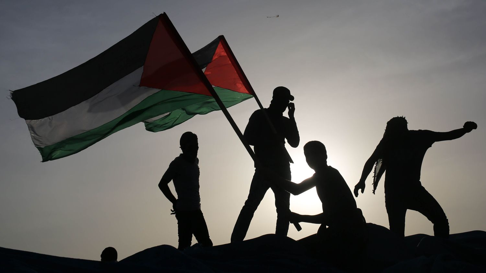

Histoire de Palestine
Antiquité : Habitation par des civilisations comme les Cananéens et les Hébreux, mentionnées dans la Bible.
Période romaine : Conquête romaine, destruction du Second Temple en 70 après une révolte juive.
Moyen Âge : Période arabe au VIIe siècle, puis conflits des croisades autour de Jérusalem.
Période moderne : Partie de l'Empire ottoman jusqu'à la Première Guerre mondiale, suivie par un mandat britannique et des tensions croissantes entre Juifs et Arabes.
Conflit israélo-palestinien : Création d'Israël en 1948, entraînant le déplacement de nombreux Palestiniens et des conflits récurrents.
Actuelle : Tensions persistantes, enjeux territoriaux et droits des Palestiniens toujours au cœur des débats.
Période Antique
.jpg)
Civilisations anciennes : Habitée par les Cananéens et les Philistins, qui établissent des villes-États sur la côte.
Royaume d'Israël et de Juda : Formé sous les règnes de Saül, David et Salomon.
Influences extérieures : Conquêtes assyriennes et babyloniennes, entraînant la destruction du Premier Temple.
Période persane : Les Juifs retournent en Palestine après la conquête perse.
Période hellénistique : Conquête par Alexandre le Grand et tensions sous les Séleucides.
La Période Arabe (638-1096)

Conquête islamique (638) : La Palestine est conquise par les armées musulmanes.
Califat omeyyade (661-750) : Développement urbain et construction de monuments.
.jpg)
Califat abbasside (750-1258) : Épanouissement culturel malgré le déplacement de la capitale.
Tensions religieuses : Des conflits émergent entre chrétiens et musulmans.
Le Temps des Croisades (1096-1244)
Début des croisades (1096) : Lancement du Premier Croisade par le pape Urbain II.
Réactions musulmanes : Saladin unifie les forces musulmanes et reconquiert Jérusalem.
Période Ottomane
.jpg)
Conquête ottomane (1517) : La Palestine est intégrée à l'Empire ottoman.
Stabilité et développement : Système de millet favorisant la coexistence.
La Domination Britannique (1917-1947)
.jpg)
Occupation militaire (1917) : Les forces britanniques occupent la Palestine.
Mandat britannique (1920) : La Palestine est placée sous mandat britannique.
Géographie des Territo
Géographie des Territoires et Frontières
.jpg)
Situation géographique : La Palestine est située à l'est de la mer Méditerranée.
Territoires : Comprend la Cisjordanie et Gaza.
Conflit Israélo-Palestinien

Historique : Ce conflit remonte à la fin du XIXe siècle avec l'émergence du nationalisme juif et arabe. La Déclaration Balfour de 1917, qui promet un "foyer national juif" en Palestine, exacerbe les tensions.
Création d'Israël (1948) : La proclamation d'Israël conduit à la Nakba, le déplacement massif de Palestiniens. Plusieurs guerres suivent, notamment en 1967 et 1973, redéfinissant les frontières et les tensions.
Occupation : La Cisjordanie et Gaza sont occupées par Israël après la guerre de 1967, créant des conditions de vie difficiles pour les Palestiniens.
Processus de paix : Plusieurs accords, comme ceux d'Oslo (1993), ont été tentés, mais la paix reste insaisissable.
Propositions de Résolution
Solution à deux États : Création d'un État palestinien aux côtés d'Israël, avec des frontières basées sur celles de 1967.
Reconnaissance mutuelle : Reconnaître le droit à l'autodétermination des deux peuples.
Dialogue continu : Encourager un dialogue direct entre les parties concernées, soutenu par la communauté internationale.
Justice transitionnelle : Aborder les injustices historiques et les droits des réfugiés palestiniens.
.jpg)
Les Absurdités Tragiques du Processus de Paix
Violations des droits : Malgré les négociations, les violations des droits humains continuent des deux côtés.
Colonisation : L'expansion des colonies israéliennes en Cisjordanie complique le processus de paix.
.jpg)
Manipulation politique : Les enjeux politiques internes influencent négativement la recherche de solutions pacifiques.
.jpg)
Pour une Paix dans la Justice
Inclusion : Assurer la participation de tous les groupes palestiniens et israéliens dans le processus de paix.
Économie durable : Promouvoir le développement économique en Palestine pour une paix durable.
Éducation à la paix : Mettre en place des programmes éducatifs pour favoriser la compréhension et la coexistence.
Références
- Smith, Charles D. "Palestine and the Arab-Israeli Conflict." St. Martin's Press, 2010.
- Pappe, Ilan. "The Ethnic Cleansing of Palestine." Oneworld Publications, 2006.
- Rosenberg, David. "The Israeli-Palestinian Conflict: What Everyone Needs to Know." Oxford University Press, 2014.
- United Nations. "Resolution 242 (1967)." Available online.
- International Crisis Group. "The Israeli-Palestinian Conflict: A Pathway to Peace." 2021.